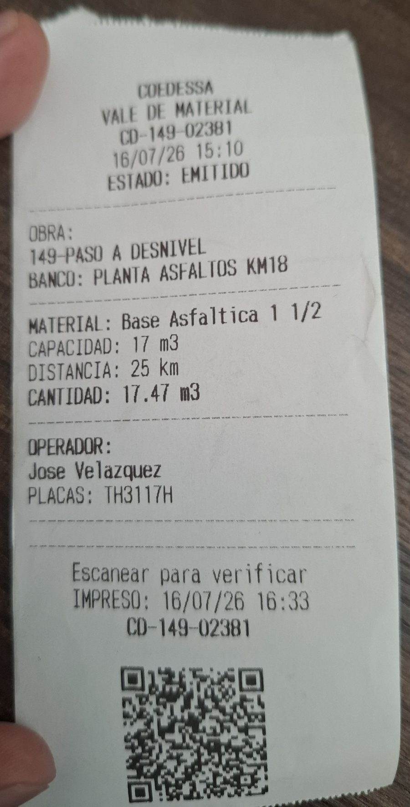

Antes de empezar
A diferencia del material pétreo o de corte, el vale asfáltico se crea completo: en el mismo momento asignas el vehículo y el operador y tomas la evidencia (foto) para compartir el PDF. No queda pendiente.
Abre "Nuevo vale" y elige Asfálticos
- Entra a la app e inicia sesión con tu cuenta.
- Toca el botón para crear un nuevo vale.
- En la pantalla de tipo de vale, elige Asfálticos.
Video: elegir tipo "Asfálticos"
Selecciona la Obra
- En Datos de Vale, abre el selector de Obra y elige la obra correcta.
- La Empresa se llena sola según la obra.
Video: seleccionar obra
Elige el Material asfáltico
- Abre el selector de Material y elige el material asfáltico que se moverá.
- La Distancia se calcula sola según el banco y la obra.
Video: elegir material asfáltico
Elige Sindicato
- Abre el selector de Sindicato y elige el sindicato. Normalmente es CTM; pero si el camión es de la empresa o interno, usa Grupo GEEM.
Video: elegir sindicato
Captura la Cantidad de material
- Escribe la Cantidad de material en m³ (metros cúbicos). Acepta decimales, por ejemplo 12.5.
Video: cantidad en m³
Asigna el Vehículo
- Toca Asignar Vehículo y elige cómo buscarlo: Escanear QR del camión o Buscar por placas.
- Las Placas y el Operador se llenan solos. Si el operador no es el correcto, usa Cambiar Operador.
Video: asignar vehículo (QR o placas)
Agrega Notas y crea el vale
- Si hace falta, escribe Notas adicionales (opcional).
- Cuando todo esté listo, toca Crear Vale.
Video: notas + Crear Vale
Toma la evidencia y comparte el PDF
- Aparecerá la sección Verificación de Foto: toma la foto de evidencia y captura la ubicación.
- Cuando la foto esté lista, toca Compartir PDF por WhatsApp.
Video: evidencia + compartir PDF
Imprime el ticket físico (2 copias)
- Después de compartir el PDF aparece el modal Ticket Físico. Es obligatorio: no se cierra hasta que imprimas (o confirmes que no hay impresora).
- Toca Buscar impresoras y elige tu impresora térmica por Bluetooth. Si quieres, revisa antes con Ver ticket antes de imprimir.
- El modal imprime un ticket a la vez. Cuando pregunte "¿Se imprimió correctamente?", para sacar la segunda copia toca No, reintentar e imprime otra vez. Cuando ya tengas las 2 copias, toca Sí, continuar.
Ver la copia que se imprime
Así se ve el ticket físico que sale de la impresora térmica y que entregas al camionero y dejas en obra:

Video: imprimir ticket (2 copias)
¡Listo! Vale asfáltico creado
El vale queda emitido con su folio, vehículo y operador ya asignados, con la evidencia compartida por WhatsApp y las 2 copias del ticket impresas.
Volver a la guía